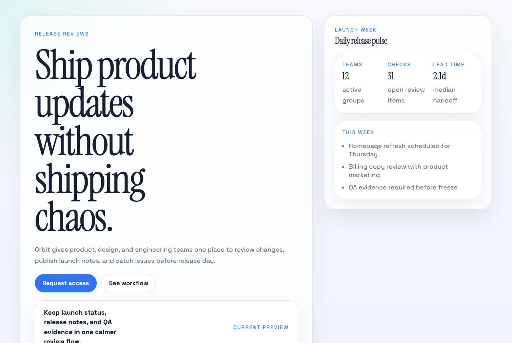
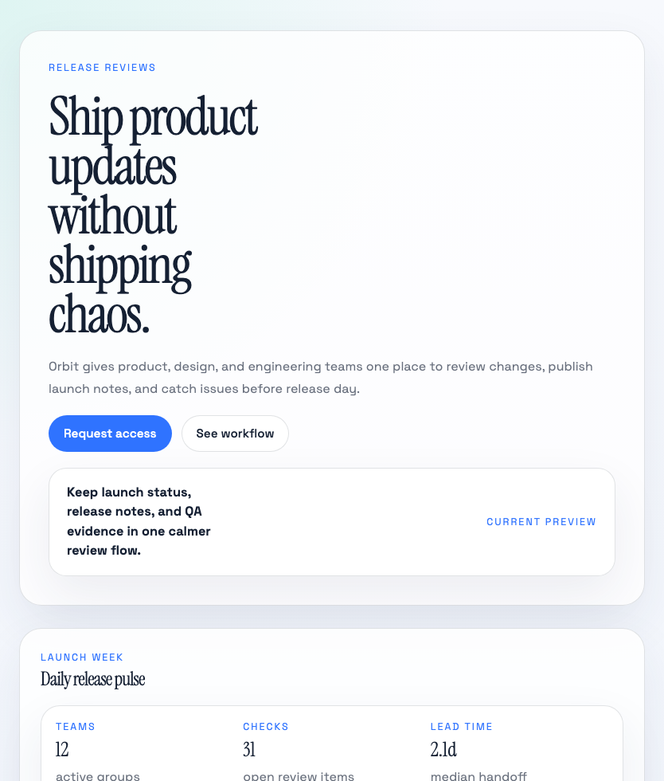
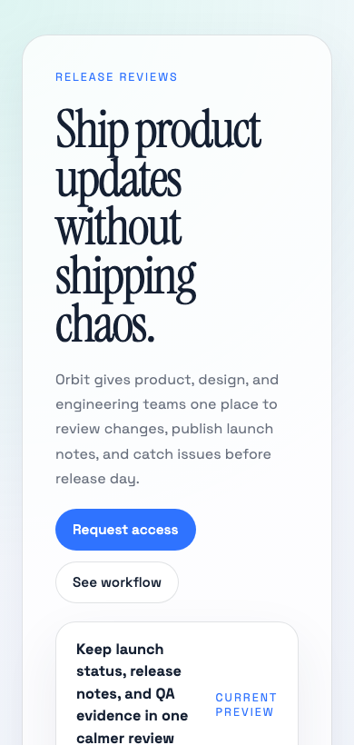
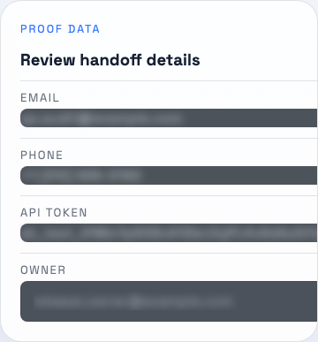
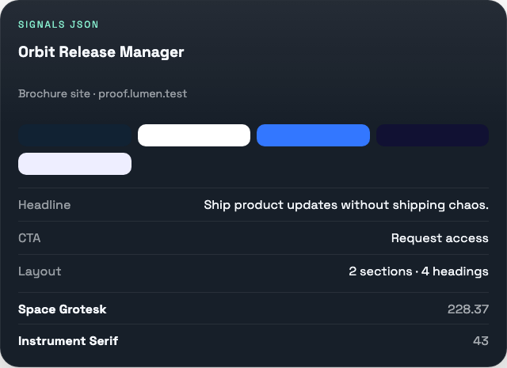

Clean the page before capture
Fixed, sticky, and high-z layers are temporarily hidden so exports start from the page itself instead of floating chrome.
Lumen removes sticky page chrome before capture, renders desktop, tablet, and mobile outputs in one run, redacts sensitive fields, and extracts useful page signals so the result is more usable than a raw screenshot.
Current bundle: 3 image exports, 1 bundle manifest JSON, local history entry, and page signals attached to the run.
desktop, tablet, mobile
3 exports plus manifest
visible fields and text
palette, type, CTA, nav, hero
Current output
proof.lumen.test
Cleaned capture



Redaction example
Current redaction covers visible text and filled inputs during export and should be reviewed before external sharing.

Signals panel
Headline, CTA, navigation, palette, and typography come from the prototype extraction pass, not a hand-written mock.

Local history item
The current history entry tracks host, timestamp, views, files, redactions, and site type.
Bundle manifest
{
"views": 3,
"files": 4,
"redactions": 4,
"signals": ["palette", "fonts", "cta", "nav"]
}The screenshot is raw input. The useful artifact is the cleaned, responsive, safer capture bundle with the page context still attached.
Implemented now
Artifact structure
proof-run-desktop.png, proof-run-tablet.png, proof-run-mobile.pngproof-run-bundle.jsonOrbit Release ManagerLast local run
Generated from the current prototype using the content-script cleanup, redaction scan, and signal extraction logic.
Implemented now
The current prototype already handles page cleanup, responsive capture, export redaction, and page-signal extraction for review work.
Fixed, sticky, and high-z layers are temporarily hidden so exports start from the page itself instead of floating chrome.
One action can generate desktop, tablet, and mobile outputs together so reviews do not depend on a single lucky viewport.
Emails, phone numbers, token-like strings, and filled fields can be blurred as part of export. Current redaction covers visible text and filled inputs during export and should be reviewed before external sharing.
The capture can carry palette, fonts, hero copy, CTA language, and navigation labels so the output stays useful in review and reference work.
Last local run
Run summary
Try the artifact
Download the same proof package shown on this page and inspect the images, bundle manifest, and extracted signals directly.
Before capture
Responsive set
Sensitive regions blurred
Page context attached
Workflow
Lumen is most useful when it removes downstream cleanup work. The point is not to save a PNG. The point is to hand over a better artifact.
Sticky layers, floating widgets, lazy-loaded media, and custom scroll roots are handled as part of capture. New overlays inserted after initial cleanup are checked again before slices are saved.
The current build can produce desktop, tablet, and mobile outputs in one grouped bundle so review threads have the right layout context from the start.
Sensitive visible text and filled fields can be blurred in the export pipeline. Current redaction should be reviewed before external sharing.
Palette, fonts, hero copy, CTA language, and navigation signals make the capture more useful in design review, QA, and product documentation.
Mechanics
The value depends on capture reliability. These details are where the product either works or falls apart.
Fixed, sticky, and high-z layers are hidden before the stitched pass, tracked during capture, and restored afterward.
A mutation observer watches for cookie banners, chat launchers, and other high-layer UI that appears after the first cleanup pass.
The page is force-scrolled before capture, lazy media is nudged toward eager loading, and visible assets are given a short settle window before slices are taken.
Lumen detects custom scroll containers and captures against the active scroll root instead of assuming the entire document.
The capture loop updates page height while it scrolls, so late-loading content can extend the document without being clipped from the final export.
Offscreen compositing respects device pixel ratio and falls back to tiled raw exports on very tall pages.
Desktop, tablet, and mobile viewports can be generated in one run and archived together.
Demo session state and capture history exist today. Sync, auth, and billing still need to be built.
Use cases
The first buyer story is narrow on purpose: teams that already capture pages and then spend time cleaning, explaining, and reformatting them.
Clean responsive references and attached page signals help design teams compare layouts without rebuilding context from scratch.
Cleaner exports, responsive bundles, and safer redaction make bug reporting and environment capture more usable.
Product teams can capture the live page with headline, CTA, and navigation context intact instead of passing around flat screenshots.
Broader archive, sync, and monitoring workflows remain future direction. They are not the main story on this page.
Current scope
The current prototype already supports the capture workflow described on this page. The next product layer is most likely studio output and team handoff, not a broad monitoring suite.
Present day
Future direction
Implemented now
The repository already covers page cleanup, responsive capture bundles, export redaction, page-signal extraction, bundle metadata, and local history. The next work is annotation, sync, auth, and billing.